📖 Sample Campaigns
Reality RPG campaigns are structured narratives that span weeks, months, or years of a character's life. Each campaign below provides a complete session-by-session arc with NPCs, timelines, key dice checks, and GM guidance. Use these as-is or adapt them to your table's needs.
Each session represents a time block chosen by the GM — typically 1–4 weeks of in-game time. Between sessions, advance the calendar, resolve background events, and let characters' SP (Stress Points) recover during downtime. Remember: 2d10 + modifier vs TN is the core resolution for every action. Max SP = 20 + RES mod × 5.
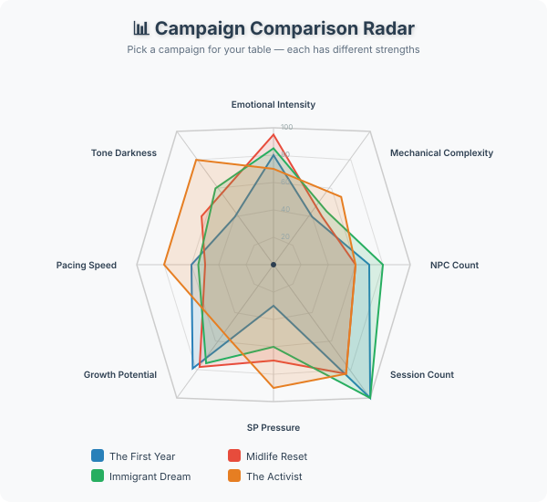
🎓 Campaign 1: "The First Year"
Premise: A 22-year-old recent graduate leaves home for the first time. Over 12 sessions (roughly one year of in-game time), they navigate independence — finding housing, landing a first job, building a social circle, experiencing love and loss, and ultimately making a defining life choice.
Recommended PC: New college graduate, age 22. Starting VIG 8, INT 9, EXP 5, DXT 8, RES 7, PRC 7 (adjust for your character). SP max: 20 + (−3) × 5 = 5 — very fragile at first, but growth is expected.
Tone: Coming-of-age. Hopeful but honest about the difficulty of early adulthood.
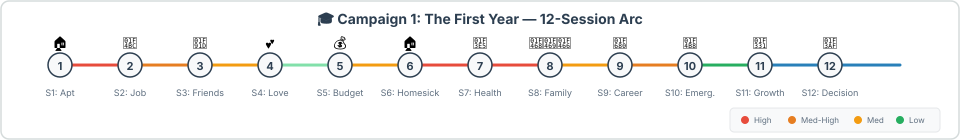
Key NPCs

Marcus Chen
Roommate
INT 10, PRC 9 — overachiever, slightly controlling
Starts as annoyance, becomes trusted friend

Dr. Sarah Kim
First supervisor
INT 11, EXP 10, PRC 8 — demanding but fair
Mentor figure; tests the PC's work ethic
Jordan Rivera
Love interest
RES 10, DXT 9 — warm, creative, emotionally available
First real relationship; challenges PC's self-worth

Mom (Elena)
Family anchor
EXP 10, RES 9 — loving but anxious
Tension over independence vs. closeness
Dr. Patel
Primary care physician
INT 11, EXP 12 — thorough, no-nonsense
Appears during health scare (Session 7)
DeShawn Williams
Old college friend
DXT 10, RES 8 — free spirit, unreliable
Temptation to abandon goals; ultimately supportive
HR Manager Linda Torres
Work authority
EXP 11, PRC 10 — by-the-book
Gatekeeper for career opportunity (Session 9)
Rachel Nguyen
Therapist
RES 11, INT 10 — patient, insightful
Helps PC process homesickness and stress
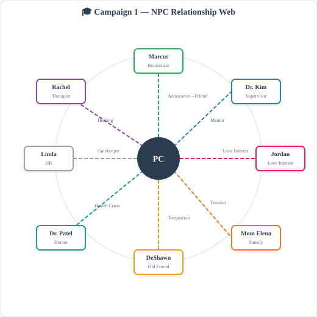
Session-by-Session Outline
Session 1 — Week 1–2
Finding an Apartment
PC arrives in a new city with a suitcase and a lease application. Must find housing within budget, negotiate with a skeptical landlord, and move in before savings run out.
• 2d10 + INT vs TN 12 — Research neighborhoods
• 2d10 + PRC vs TN 13 — Convince landlord
• 2d10 + VIG vs TN 10 — Haul boxes up 4 flights
• 2d10 + EXP vs TN 9 — Read lease terms
Session 2 — Week 3–4
First Job
PC attends their first day at work. Awkward introductions, learning the culture, and a surprise task they're not qualified for. Dr. Kim watches closely.
• 2d10 + PRC vs TN 11 — Introduce yourself to the team
• 2d10 + INT vs TN 13 — Learn new software on the fly
• 2d10 + EXP vs TN 12 — Navigate workplace hierarchy
• 2d10 + RES vs TN 10 — Don't panic when Kim assigns the big project
Session 3 — Week 5–6
Making Friends
Lunch alone for the third day in a row. PC tries to connect with coworkers and neighbors. Marcus clashes over chores. DeShawn texts about a party.
• 2d10 + PRC vs TN 10 — Strike up a conversation at the coffee shop
• 2d10 + RES vs TN 11 — Set boundaries with Marcus about cleaning
• 2d10 + DXT vs TN 9 — Actually cook dinner instead of ordering out
• 2d10 + EXP vs TN 10 — Decide whether to go to DeShawn's party
Session 4 — Week 7–8
First Relationship
PC meets Jordan at a community event. There's chemistry, but PC has never been in a relationship. Awkward first date, vulnerability, and the terrifying question of "what are we?"
• 2d10 + DXT vs TN 10 — Dress well for the date
• 2d10 + PRC vs TN 12 — Be charming without being fake
• 2d10 + RES vs TN 13 — Admit you're nervous
• 2d10 + RES vs TN 14 — Say "I like you, too"
Session 5 — Week 9–10
Managing Finances
First paycheck arrives — then the reality of rent, groceries, transit, phone bill, and savings hits. PC discovers they're already behind on budget. Marcus suggests splitting a gym membership.
• 2d10 + INT vs TN 40 — Create a workable budget
• 2d10 + PRC vs TN 40 — Negotiate a lower phone plan
• 2d10 + INT vs TN 40 — File taxes correctly
• 2d10 + RES vs TN 40 — Resist impulse buying
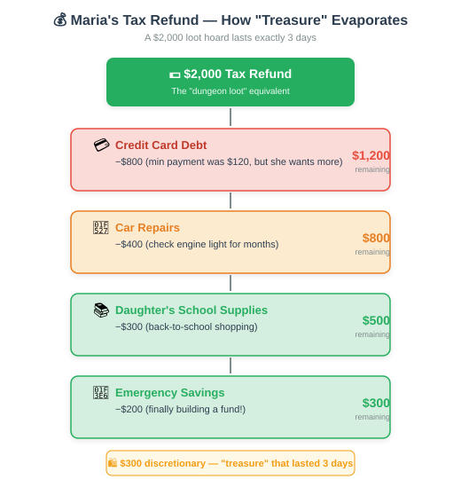
Session 6 — Week 11–12
Homesickness
It's been three months. PC misses home, parents, old friends. A birthday call with Mom turns emotional. Rachel the therapist suggests talking about it. Jordan is supportive but can't fix it.
• 2d10 + RES vs TN 13 — Acknowledge feelings without spiraling
• 2d10 + PRC vs TN 11 — Honest conversation with Mom
• 2d10 + RES vs TN 12 — Attend therapy and open up
• 2d10 + INT vs TN 10 — Identify the root of homesickness
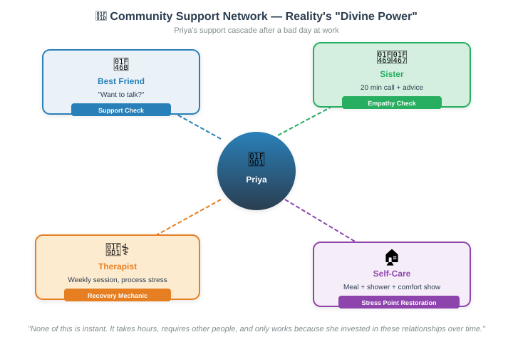
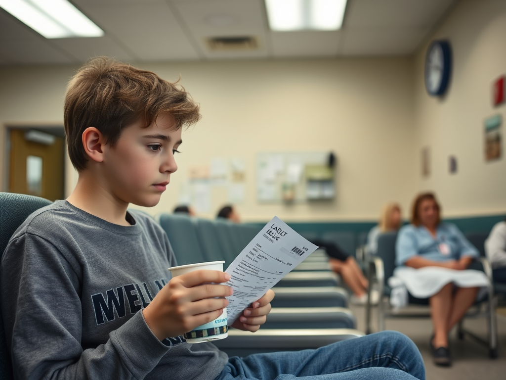
Session 7 — Month 4
Health Scare
PC has been ignoring chest pain and fatigue. A bad day at work sends them to urgent care. Dr. Patel runs tests — it's not life-threatening but requires lifestyle changes. The body is sending a message.
• 2d10 + VIG vs TN 14 — Survive the worst symptoms
• 2d10 + RES vs TN 12 — Face the diagnosis without panic
• 2d10 + INT vs TN 11 — Understand the treatment plan
• 2d10 + PRC vs TN 12 — Tell Dr. Kim you need a reduced workload
Session 8 — Month 5
Family Crisis
Dad had a minor stroke. Mom is overwhelmed. PC must decide: fly home (costly, miss work) or stay and support from afar. Marcus offers to cover a shift. Jordan suggests a compromise.
• 2d10 + RES vs TN 13 — Make a decision under pressure
• 2d10 + PRC vs TN 12 — Negotiate time off with Dr. Kim
• 2d10 + INT vs TN 11 — Research Dad's condition
• 2d10 + RES vs TN 14 — Handle the phone call with Mom
Session 9 — Month 6–7
Career Opportunity
A promotion or transfer opportunity opens up. It means more money but also more responsibility and a possible move. Linda Torres is the gatekeeper. The PC has grown significantly in 6 months.
• 2d10 + EXP vs TN 13 — Qualify for the opportunity
• 2d10 + PRC vs TN 14 — Interview / present your case
• 2d10 + INT vs TN 12 — Research the new role's demands
• 2d10 + RES vs TN 11 — Weigh the personal cost
Session 10 — Month 8
Financial Emergency
Car breaks down. Or a medical copay hits. Or Marcus reveals he can't afford next month's rent. PC's emergency fund — barely started — is tested. Every dollar counts.
• 2d10 + INT vs TN 12 — Find the cheapest viable solution
• 2d10 + PRC vs TN 13 — Negotiate payment terms
• 2d10 + RES vs TN 12 — Stay calm and think clearly
• 2d10 + DXT vs TN 10 — Actually fix something yourself
Session 11 — Month 9–10
Personal Growth
PC has been through a lot. This session is quieter — reflection, consolidation. A conversation with Jordan about the future. A moment with Marcus where they acknowledge how far they've come. PC starts a new habit (exercise, journaling, cooking).
• 2d10 + RES vs TN 10 — Commit to a new healthy habit
• 2d10 + PRC vs TN 11 — Have a deep conversation with Jordan
• 2d10 + INT vs TN 10 — Set goals for the next six months
• 2d10 + VIG vs TN 10 — Follow through on the first week
Session 12 — Month 11–12
The Climactic Decision
One year mark. A major life choice: accept the promotion and relocate? Move back home? Propose to Jordan? Quit everything and pursue art? The PC must choose, knowing there's no going back.
• 2d10 + RES vs TN 15 — Know what you truly want
• 2d10 + PRC vs TN 13 — Communicate your decision
• 2d10 + INT vs TN 12 — Plan the logistics
• 2d10 + VIG vs TN 11 — Physically handle the transition
Pacing: Sessions 1–3 are fast and overwhelming. Sessions 4–6 slow down as relationships deepen. Sessions 7–10 raise the stakes. Sessions 11–12 provide resolution. Growth: Award +1 to an attribute at Session 11 if the player demonstrates meaningful character development. RES is the most likely candidate.
🔄 Campaign 2: "Midlife Reset"
Premise: A 45-year-old faces three simultaneous crises: divorce, job loss, and a new health diagnosis. Over 10 sessions, they navigate the storm, discover unexpected strengths, and rebuild — not the life they planned, but perhaps a better one.
Recommended PC: Midlife professional, age 45. Starting VIG 7, INT 10, EXP 11, DXT 6, RES 9, PRC 8. SP max: 20 + (+4) × 5 = 40 — substantial reserves but under immense pressure.
Tone: Gritty but ultimately hopeful. This is about resilience, not victimhood.
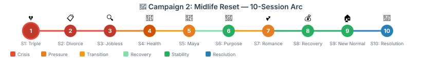
Key NPCs
Carmen (spouse)
Divorce partner
INT 9, EXP 10 — hurt, angry, but not cruel
From hostility to civil co-parenting

Maya (adult daughter, 24)
Child
RES 10, PRC 8 — independent, concerned
Strained, then reconnecting

David Park, MD
Endocrinologist
INT 12, EXP 13 — direct, compassionate
Delivers diagnosis; guides treatment
Tom Brennan
Former boss
EXP 11, PRC 7 — pragmatic, not personal
Delivers layoff; later offers reference
Sam Torres
New love interest
RES 11, DXT 9 — divorced, warm, grounded
Unexpected romance in Session 6
Frankie (sibling)
Family support
VIG 10, RES 8 — steady, reliable
Unwavering support throughout
Dr. Okafor
Therapist
RES 12, INT 11 — wise, direct
Helps PC process all three crises
Jean-Pierre
Barista / friend
PRC 9, RES 7 — chatty, kind
Small daily anchor of normalcy
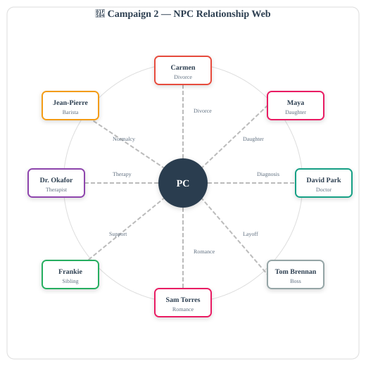
Session-by-Session Outline
Session 1 — Day 1–7
The Triple Blow
Carmen serves papers. Tom Brennan calls you into his office — restructuring. A routine blood test flags abnormal results. All three hit within 48 hours.
• 2d10 + RES vs TN 15 — Don't completely break down
• 2d10 + INT vs TN 12 — Understand the divorce papers
• 2d10 + RES vs TN 13 — Face the medical results
• 2d10 + PRC vs TN 11 — Call your lawyer
Session 2 — Week 2–3
The Divorce Process
First meeting with lawyer. Asset division begins. The house. The accounts. Maya is caught in the middle. PC must decide: fight or negotiate?
• 2d10 + INT vs TN 12 — Understand legal options
• 2d10 + PRC vs TN 13 — Negotiate with Carmen's lawyer
• 2d10 + RES vs TN 12 — Keep emotions out of legal decisions
• 2d10 + PRC vs TN 11 — Talk to Maya without making her choose
Session 3 — Week 4–5
Unemployment
Severance is modest. Resume goes out. Interviews are humbling — you're 45 in a market that prefers 30-somethings. Frankie offers the couch. Maya suggests a career pivot.
• 2d10 + EXP vs TN 12 — Leverage your experience
• 2d10 + PRC vs TN 13 — Network effectively
• 2d10 + INT vs TN 11 — Research new career options
• 2d10 + RES vs TN 12 — Handle rejection without spiraling
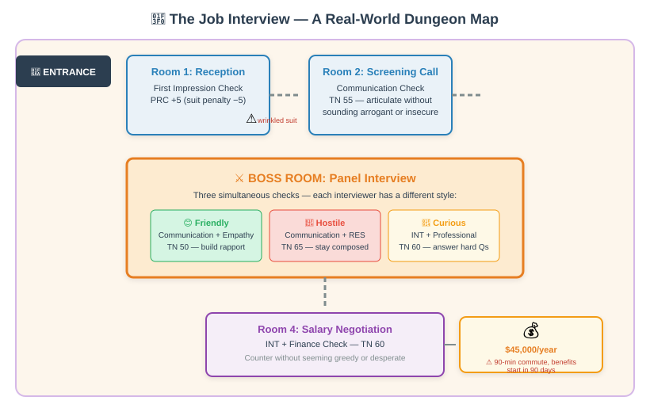
Session 4 — Week 6–7
Healthcare Maze
Diagnosis confirmed: prediabetes with early hypertension. Insurance is in limbo due to job loss. PC must navigate Medicaid, find a new primary care doctor, and start lifestyle changes.
• 2d10 + INT vs TN 13 — Navigate insurance paperwork
• 2d10 + RES vs TN 12 — Accept the diagnosis
• 2d10 + VIG vs TN 11 — Start the exercise regimen
• 2d10 + DXT vs TN 10 — Cook a healthy meal from scratch
Session 5 — Week 8–9
Reconnecting with Maya
Maya hasn't called in weeks. She's processing her own feelings about the divorce. A late-night call opens up. PC must be present — not defensive, not dismissive.
• 2d10 + RES vs TN 13 — Listen without getting defensive
• 2d10 + PRC vs TN 12 — Apologize where you're wrong
• 2d10 + INT vs TN 11 — Understand Maya's perspective
• 2d10 + RES vs TN 14 — Admit you're struggling, too
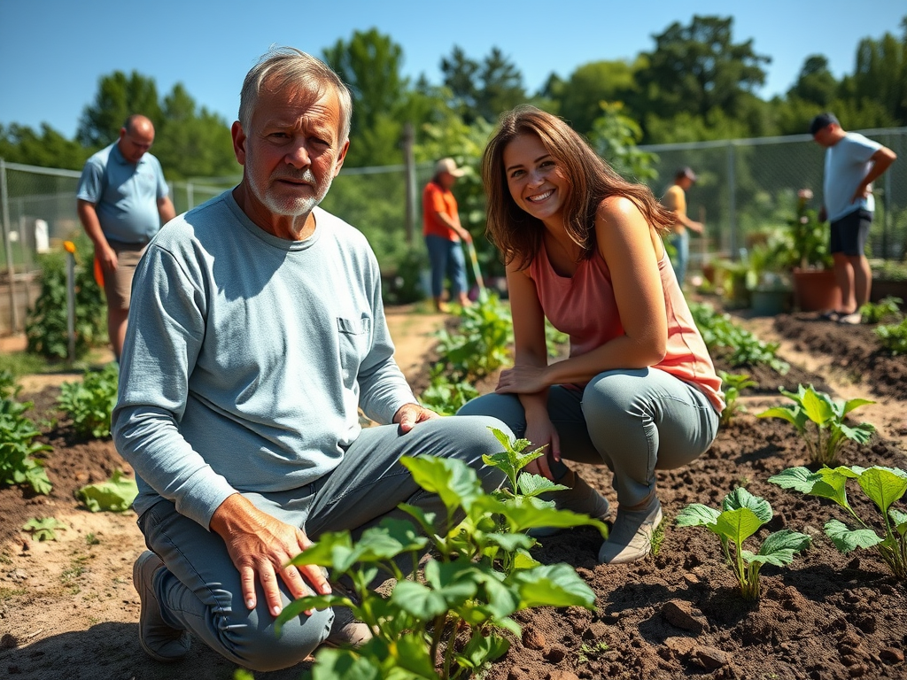
Session 6 — Week 10–11
Finding Purpose
Between job hunts and doctor appointments, PC stumbles into a volunteer opportunity or community class. Something clicks — a spark of meaning that isn't tied to a paycheck. Sam Torres appears here.
• 2d10 + EXP vs TN 11 — Identify transferable skills
• 2d10 + PRC vs TN 10 — Connect with new community
• 2d10 + RES vs TN 11 — Open yourself to possibility
• 2d10 + DXT vs TN 9 — Actually show up to the first meeting
Session 7 — Week 12–13
Unexpected Romance
Things with Sam develop. It's scary — PC hasn't dated in years, let alone since the divorce started. First real date. Vulnerability. Fear of repeating patterns. But also genuine connection.
• 2d10 + RES vs TN 13 — Be open to new love
• 2d10 + PRC vs TN 12 — Be honest about your situation
• 2d10 + RES vs TN 14 — Not project divorce trauma onto Sam
• 2d10 + INT vs TN 11 — Recognize healthy relationship signs
Session 8 — Week 14–15
Financial Recovery
A job offer — not the one you wanted, but it's real. Or a freelance contract. Or a small business idea takes shape. The financial floor stops sinking. Budgeting becomes planning.
• 2d10 + EXP vs TN 12 — Deliver on the new work
• 2d10 + INT vs TN 11 — Create a sustainable budget
• 2d10 + PRC vs TN 12 — Negotiate a fair rate/salary
• 2d10 + RES vs TN 10 — Trust that this is real
Session 9 — Week 16–17
New Normal
Divorce is finalized. New apartment. Health regimen is habit, not struggle. Maya visits and seems at ease. Sam is a regular presence. PC is building something new — it just doesn't look like what they planned.
• 2d10 + RES vs TN 11 — Accept that "different" can mean "better"
• 2d10 + INT vs TN 10 — Plan the next six months
• 2d10 + PRC vs TN 10 — Settle into new routines
• 2d10 + VIG vs TN 9 — Maintain health habits consistently
Session 10 — Week 18–20
Resolution
Final session. A moment of clarity — perhaps a conversation with Dr. Okafor, or a quiet morning with Sam, or Maya saying something that makes it all make sense. PC has been through hell and come out changed. Not fixed. But alive.
• 2d10 + RES vs TN 12 — Articulate what you've learned
• 2d10 + PRC vs TN 11 — Share your story with someone who needs it
• 2d10 + INT vs TN 10 — Set intentions for the future
• 2d10 + VIG vs TN 9 — Feel physically strong for the first time in months
This campaign is emotionally heavy. Establish strong safety tools before play. Use the lines and veils approach — some tables may want to fade-to-black on the divorce details or health specifics. The arc should feel earned, not easy. Avoid melodrama; the power is in quiet moments of courage.
🌍 Campaign 3: "The Immigrant Dream"
Premise: A family — parents and one or two children — has recently moved to a new country. Over 12 sessions, they face language barriers, cultural dislocation, legal hurdles, and the slow, hard work of building a new life. The theme is belonging — what it costs, what it means, and what it feels like to finally arrive.
Recommended PCs: Play each family member as a PC (2–3 players) OR play the primary breadwinner with family as complex NPCs. Starting stats vary by role. Parent: VIG 8, INT 8, EXP 10, DXT 7, RES 9, PRC 7. SP max: 20 + (+4) × 5 = 40.
Tone: Bittersweet, hopeful, culturally rich. Honor the real experiences of immigrant families.
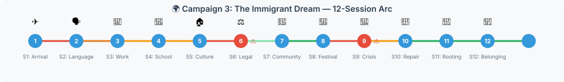
Key NPCs
Ms. Gutierrez
Landlady
EXP 11, RES 8 — kind but firm, speaks limited English
Becomes a cultural bridge
Mr. Henderson
Principal at children's school
INT 10, EXP 9 — well-meaning, occasionally tone-deaf
Advocate for the children

Aisha Rahman
Community leader
PRC 10, EXP 11 — first-generation immigrant, established
Mentor and cultural anchor
Agent Morales
Immigration officer
EXP 12, PRC 9 — professional, by-the-book
Legal hurdle in Session 6
Kevin O'Brien
First employer
EXP 8, PRC 6 — fair but uncomprehending
Tests PC's work skills and patience
Dr. Lee
Pediatrician
INT 11, EXP 10 — culturally aware
Handles children's health transition

Uncle Raj
Extended family (back home)
RES 10, EXP 9 — voice of the old country
Phone calls that remind PC of what was left behind
Coach Diaz
Children's sports teacher
VIG 10, RES 8 — inclusive, encouraging
Helps children integrate socially
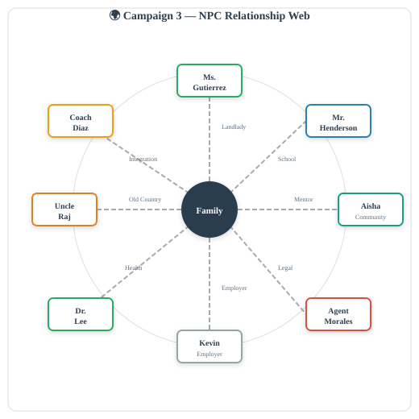
Session-by-Session Outline
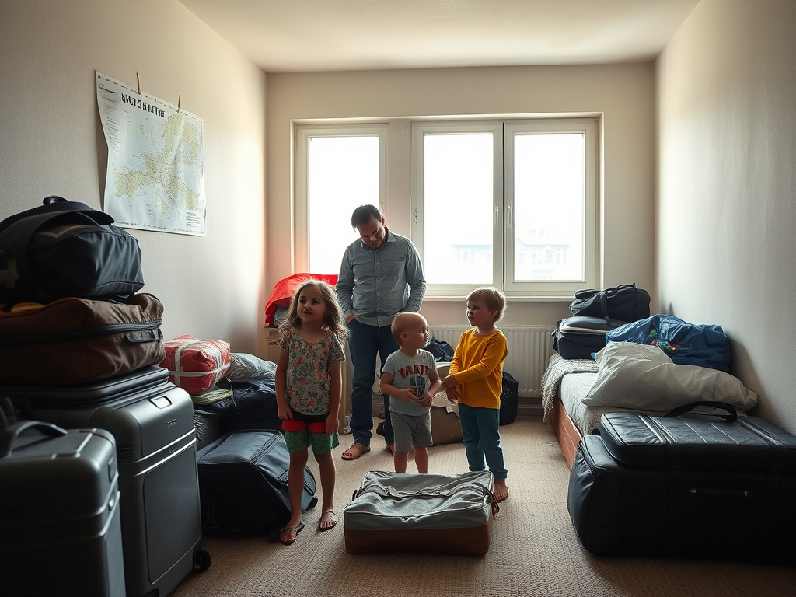
Session 1 — Week 1–2
Arrival & First Days
Hotel room or temporary housing. Luggage, confusion, language barriers at the grocery store. The children are either excited or terrified. PC must establish basic survival.
• 2d10 + INT vs TN 14 — Navigate a government office with minimal language
• 2d10 + PRC vs TN 12 — Ask for help without losing dignity
• 2d10 + RES vs TN 13 — Reassure the children
• 2d10 + DXT vs TN 10 — Set up the apartment
Session 2 — Week 3–4
Language Barriers
Every interaction is harder than it should be. PC enrolls in language classes. Misunderstandings at the market, at the doctor, at the bank. A moment of frustration that makes PC question everything.
• 2d10 + INT vs TN 13 — Learn the basics of the new language
• 2d10 + RES vs TN 12 — Handle embarrassment from a misunderstanding
• 2d10 + PRC vs TN 11 — Communicate needs despite the barrier
• 2d10 + EXP vs TN 10 — Find resources for language learning
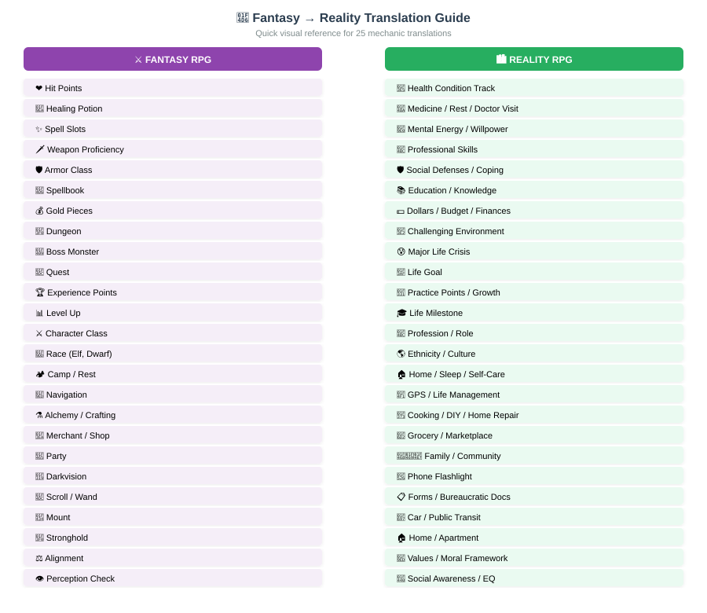
Session 3 — Week 5–6
Finding Work
PC's credentials may not transfer. Interviews test both skills and language. Kevin O'Brien offers a job below PC's qualifications. The dilemma: take it or keep looking?
• 2d10 + EXP vs TN 13 — Demonstrate your skills in an interview
• 2d10 + PRC vs TN 12 — Negotiate despite being desperate
• 2d10 + INT vs TN 11 — Research credential recognition
• 2d10 + RES vs TN 12 — Accept a demotion without losing self-respect
Session 4 — Week 7–8
School Integration
The children's first month of school. One child is thriving; the other is being bullied or struggling. Mr. Henderson schedules a meeting. Coach Diaz sees potential.
• 2d10 + PRC vs TN 13 — Advocate for your child at school
• 2d10 + RES vs TN 12 — Help your child process bullying
• 2d10 + INT vs TN 11 — Understand the new school system
• 2d10 + RES vs TN 11 — Balance old-country values with new-country reality
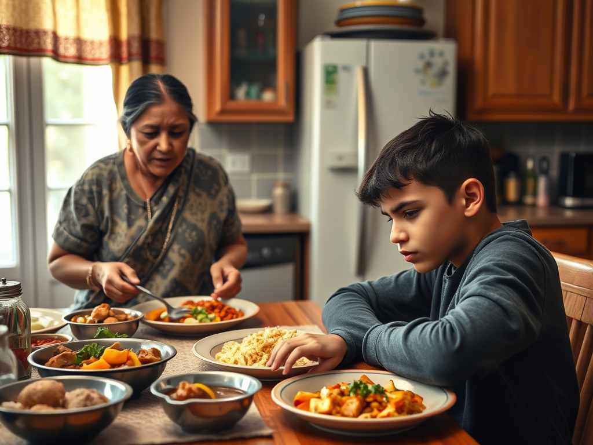
Session 5 — Month 3
Cultural Identity Conflict
The children want to assimilate — stop speaking the home language, reject traditional food, resist cultural practices. PC feels torn between preserving heritage and not holding children back.
• 2d10 + RES vs TN 13 — Process feelings of cultural loss
• 2d10 + PRC vs TN 12 — Set boundaries without being authoritarian
• 2d10 + INT vs TN 11 — Find a balanced approach
• 2d10 + EXP vs TN 10 — Share cultural knowledge children appreciate
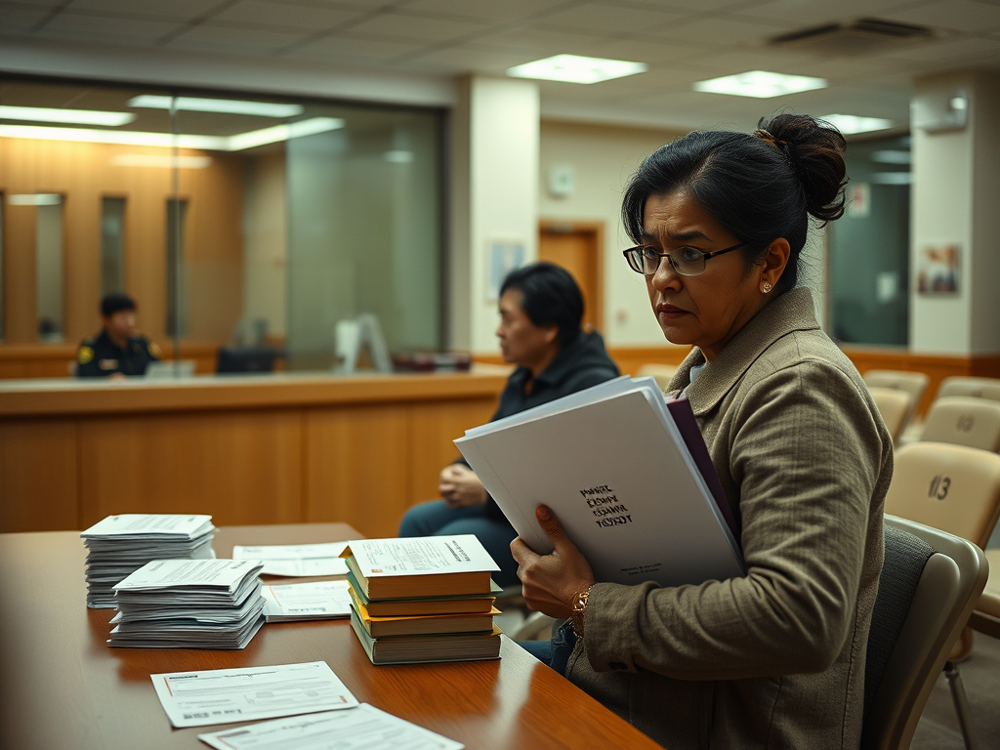
Session 6 — Month 4
Immigration Hurdle
A legal issue arises: a visa extension, a missing document, a policy change. Agent Morales is the face of the bureaucracy. The family's legal status hangs in balance.
• 2d10 + INT vs TN 14 — Navigate complex legal paperwork
• 2d10 + PRC vs TN 13 — Present your case to Agent Morales
• 2d10 + RES vs TN 14 — Keep the family calm during the process
• 2d10 + EXP vs TN 12 — Find the right legal resources
Session 7 — Month 5
Community Building
PC starts connecting with other immigrants and locals. A community center, a place of worship, or a cultural association becomes a second home.
• 2d10 + PRC vs TN 11 — Build genuine friendships
• 2d10 + RES vs TN 10 — Open up about your experience
• 2d10 + INT vs TN 10 — Learn about community resources
• 2d10 + DXT vs TN 9 — Share a traditional meal with neighbors
Session 8 — Month 6
Cultural Celebration
The family organizes or attends a cultural festival. The children participate. For one beautiful day, the old and new worlds merge. A moment of genuine joy.
• 2d10 + DXT vs TN 10 — Prepare traditional food or decorations
• 2d10 + PRC vs TN 10 — Share your culture with neighbors
• 2d10 + RES vs TN 9 — Feel proud of your heritage
• 2d10 + INT vs TN 10 — Teach the children a family story
Session 9 — Month 7
The Crisis
Something tests everything: a family illness, a deportation scare for a relative, a child in trouble, financial collapse. The foundation cracks. PC must rally the family and the community.
• 2d10 + RES vs TN 15 — Hold the family together
• 2d10 + PRC vs TN 13 — Mobilize community support
• 2d10 + INT vs TN 12 — Find a solution under pressure
• 2d10 + VIG vs TN 11 — Physically endure the crisis
Session 10 — Month 8
Aftermath & Repair
The crisis passes — barely. The family is shaken but intact. What was learned? What needs to change? PC makes concrete plans for stability.
• 2d10 + RES vs TN 12 — Process trauma without numbing out
• 2d10 + INT vs TN 11 — Build a safety plan
• 2d10 + PRC vs TN 11 — Reassure the children
• 2d10 + EXP vs TN 10 — Leverage lessons learned
Session 11 — Month 9–10
Rooting
Small signs of belonging: PC gets a promotion, a child makes a real friend, a neighbor calls PC "one of us." The language is better. The food tastes right. Home starts to feel like home.
• 2d10 + EXP vs TN 12 — Advance at work
• 2d10 + RES vs TN 10 — Feel comfortable in your own skin
• 2d10 + PRC vs TN 10 — Give back to the community
• 2d10 + INT vs TN 10 — Plan for the next year
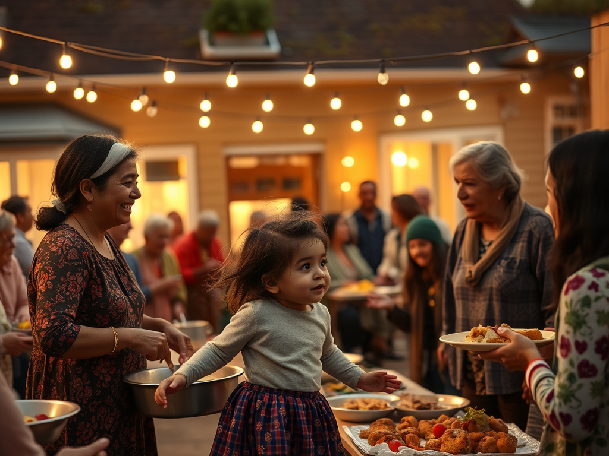
Session 12 — Month 11–12
Belonging
One year anniversary. A quiet moment — maybe a video call with family back home where PC can finally say "I'm okay" and mean it. Or the children saying something in the home language that makes PC cry. Hard-won, real, and earned.
• 2d10 + RES vs TN 11 — Articulate your journey
• 2d10 + PRC vs TN 10 — Share your story with someone from back home
• 2d10 + INT vs TN 10 — Define what "home" means now
• 2d10 + RES vs TN 12 — Make peace with what was left behind
Cultural sensitivity is paramount. Work with your players to establish which culture/country of origin the family comes from. Research real experiences. Do not stereotype. The immigrant experience is not monolithic. Some tables may want to include specific topics (deportation, discrimination, religious persecution) — use content warnings and safety tools before every session that touches on them.
✊ Campaign 4: "The Activist"
Premise: A character discovers a problem in their community — environmental contamination, housing injustice, police misconduct, a closing community center — and decides to fight it. Over 10 sessions, they go from awareness to action, face backlash, experience setbacks, and reach a climax. The campaign can end in victory or defeat — both are meaningful.
Recommended PC: Any age, any background. The defining trait is conscience. Starting VIG 8, INT 9, EXP 8, DXT 7, RES 10, PRC 9. SP max: 20 + (+5) × 5 = 45 — high resilience needed for this arc.
Tone: Urgent, morally complex. No easy answers.
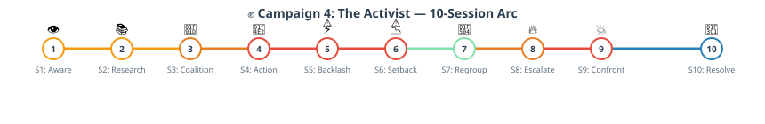
Key NPCs
Tanya Brooks
Fellow activist
PRC 11, EXP 10 — experienced organizer, passionate
Co-conspirator and moral compass
Councilman Richard Hayes
Antagonist / institution
EXP 12, PRC 10 — polished, self-interested
Represents the system PC is fighting

Reverend Amara Osei
Community leader
RES 11, PRC 10 — respected, strategic
Allies PC with the broader community
Marco Vasquez
Journalist
INT 11, EXP 9 — ambitious, ethical
Media ally who can amplify or undermine
Partner (Player-defined)
Personal anchor
RES 9 — supportive but concerned
Tests PC's balance between cause and life
Det. Angela Cruz
Law enforcement
EXP 11, RES 8 — professional, conflicted
Can be obstacle or unexpected ally

Dr. James Whitfield
Expert witness
INT 12, EXP 11 — data-driven, cautious
Provides evidence but fears backlash
The Opposition
Collective antagonist
— —
Corporate, political, or institutional forces
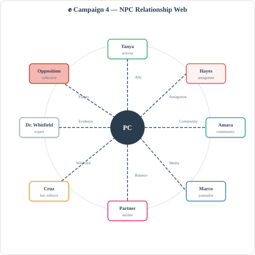
Session-by-Session Outline
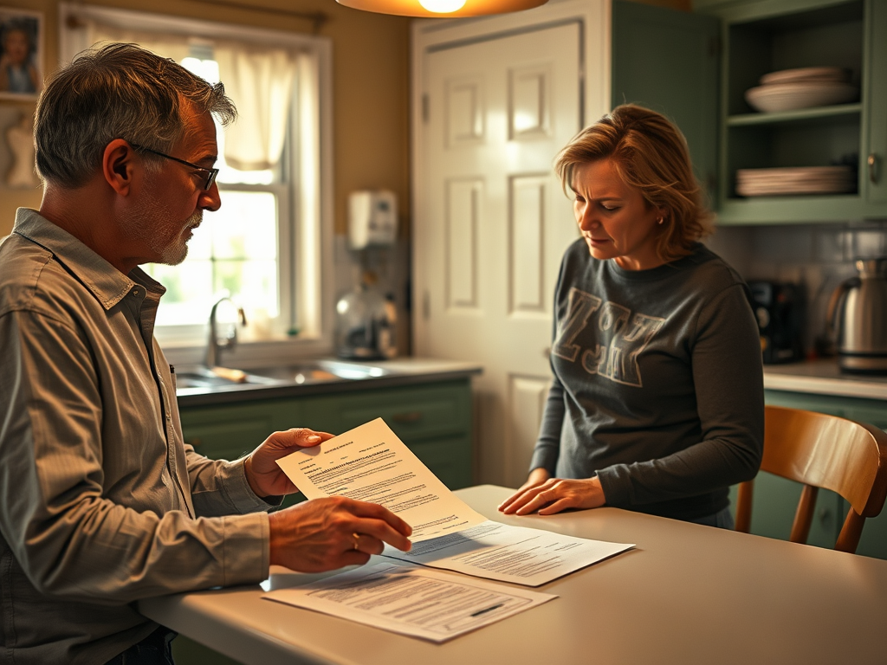
Session 1 — Week 1
Awareness
PC discovers the problem. A neighbor's illness. A closed park. A denied permit. Something clicks — this isn't an isolated incident, it's a pattern. PC must decide: speak up or stay quiet?
• 2d10 + INT vs TN 12 — Research and confirm the pattern
• 2d10 + RES vs TN 13 — Overcome fear of speaking out
• 2d10 + PRC vs TN 11 — Talk to a neighbor about it
• 2d10 + INT vs TN 11 — Document what you've found
Session 2 — Week 2
Research
PC digs deeper. Dr. Whitfield's data confirms the scope. Tanya Brooks introduces PC to organizing basics. The problem is bigger than anyone realized.
• 2d10 + INT vs TN 13 — Gather and verify evidence
• 2d10 + EXP vs TN 12 — Understand the legal/political landscape
• 2d10 + PRC vs TN 11 — Convince Dr. Whitfield to go on record
• 2d10 + RES vs TN 12 — Commit to the fight
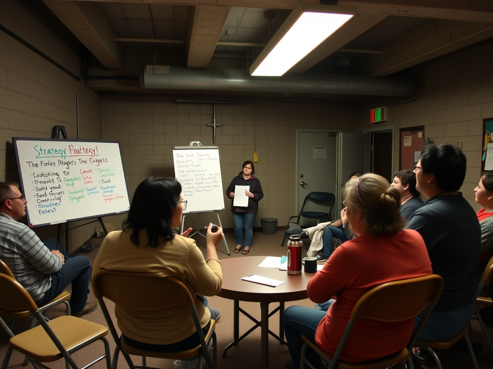
Session 3 — Week 3–4
Building a Coalition
Tanya helps PC reach out to Reverend Osei, local groups, and affected families. Not everyone agrees on tactics. PC must unite different voices toward one goal.
• 2d10 + PRC vs TN 13 — Inspire others to join
• 2d10 + INT vs TN 12 — Develop a strategy
• 2d10 + EXP vs TN 11 — Navigate different groups' agendas
• 2d10 + RES vs TN 12 — Stay focused when people disagree
Session 4 — Week 5
First Action
The first public action — a community meeting, a petition, a press conference with Marco Vasquez. Councilman Hayes dismisses it publicly. But the seed is planted.
• 2d10 + PRC vs TN 14 — Deliver a compelling public speech
• 2d10 + INT vs TN 12 — Answer tough questions from the press
• 2d10 + RES vs TN 13 — Handle Hayes's dismissive response
• 2d10 + PRC vs TN 11 — Keep the coalition energized after mixed results
Session 5 — Week 6
Backlash
The opposition strikes back. Anonymous threats. A smear campaign. PC's partner is worried. Someone in the coalition wavers. PC must protect themselves and their people.
• 2d10 + RES vs TN 14 — Handle threats without panic
• 2d10 + PRC vs TN 13 — Counter the smear campaign
• 2d10 + INT vs TN 12 — Document harassment for legal protection
• 2d10 + RES vs TN 13 — Reassure your partner and family
Session 6 — Week 7
Setback
A key piece of evidence is discredited. A coalition member backs out. A planned action is shut down. It feels like everything is falling apart. PC questions whether this was a mistake.
• 2d10 + RES vs TN 15 — Don't give up
• 2d10 + INT vs TN 12 — Analyze what went wrong
• 2d10 + PRC vs TN 12 — Hold the coalition together
• 2d10 + RES vs TN 13 — Process self-doubt honestly
Session 7 — Week 8
Regrouping
Tanya and Reverend Osei pull PC back together. A strategy session. New allies emerge — maybe Det. Cruz privately agrees the problem is real. PC refines the approach.
• 2d10 + INT vs TN 12 — Develop a better strategy
• 2d10 + PRC vs TN 12 — Recruit new allies
• 2d10 + RES vs TN 11 — Rebuild confidence
• 2d10 + EXP vs TN 11 — Learn from the setback
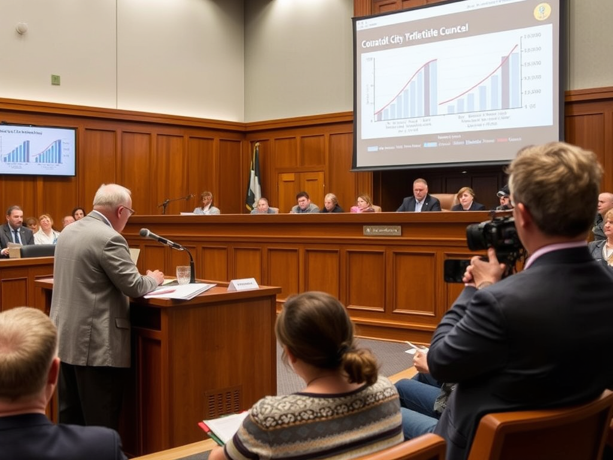
Session 8 — Week 9
Escalation
The campaign goes big. A rally. A city council hearing. Marco Vasquez publishes the full story. The community shows up in force. Hayes is cornered.
• 2d10 + PRC vs TN 14 — Mobilize the community
• 2d10 + INT vs TN 13 — Present irrefutable evidence
• 2d10 + RES vs TN 13 — Stay composed under intense scrutiny
• 2d10 + EXP vs TN 12 — Navigate the political process
Session 9 — Week 10
Confrontation
The final face-off. A hearing, a vote, a public reckoning. Hayes and his allies make their last move. PC and the coalition make theirs. The community watches.
• 2d10 + PRC vs TN 15 — Deliver the closing argument
• 2d10 + INT vs TN 13 — Anticipate and counter the opposition
• 2d10 + RES vs TN 14 — Stand your ground
• 2d10 + EXP vs TN 13 — Execute the final play
Session 10 — Week 11–12
Resolution
Victory or defeat. If victory: what's the cost? If defeat: what's the legacy? Either way, PC has been transformed. The community has been changed. The final scene should be quiet.
• 2d10 + RES vs TN 12 — Process the outcome
• 2d10 + PRC vs TN 11 — Address the community one final time
• 2d10 + INT vs TN 10 — Plan what comes next
• 2d10 + RES vs TN 13 — Make peace with the result
The ending is not predetermined. Let the dice and player choices determine victory or defeat. Both are narratively satisfying. If the PC wins: show the cost — relationships strained, health impacted, personal life neglected. If the PC loses: show the seeds — the community is organized, awareness is raised, the next fight is easier. The GM should never rail-road the outcome. Let the players earn whatever happens.
🎯 Running Reality RPG Campaigns: GM Tips
Each session should advance 1–4 weeks of in-game time. Between sessions, resolve background events: bills arrive, relationships evolve, health changes, seasons shift. Use the Seasonal Calendar (GM Tools page) to track monthly events that affect all characters.
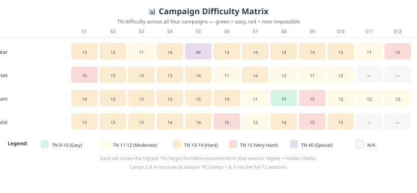
Characters should grow over a campaign. At the end of every 3 sessions, allow the player to increase one attribute by +1 if they've demonstrated meaningful development in that area. SP max recalculates with new RES. Track EXP gains through real skill-building (language classes, work experience, therapy).
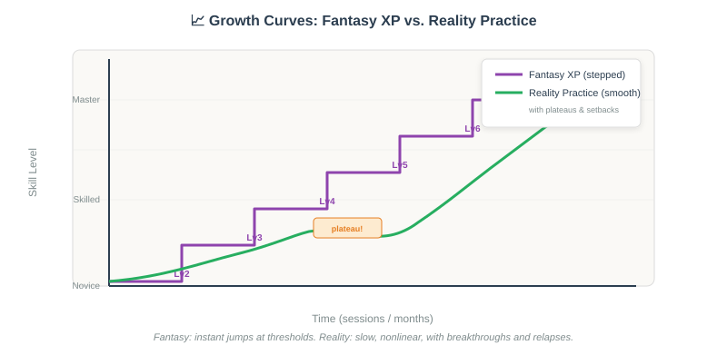
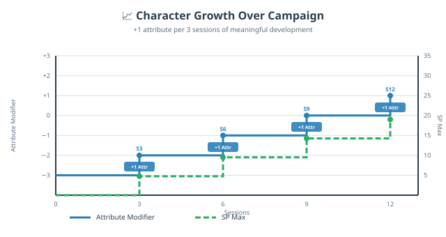
Max SP = 20 + RES mod × 5. Characters recover 1 SP per week of downtime and 3 SP per week of genuine rest (vacation, meditation, therapy). SP overload (exceeding max) triggers a stress event — see Mental Health for details. Use SP as a narrative tool, not a punishment.
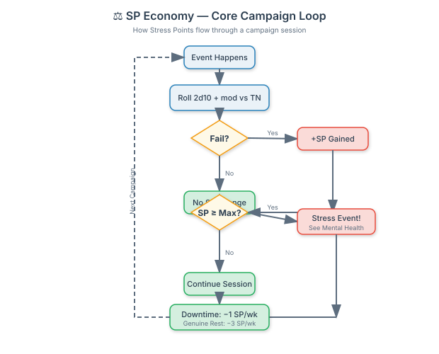
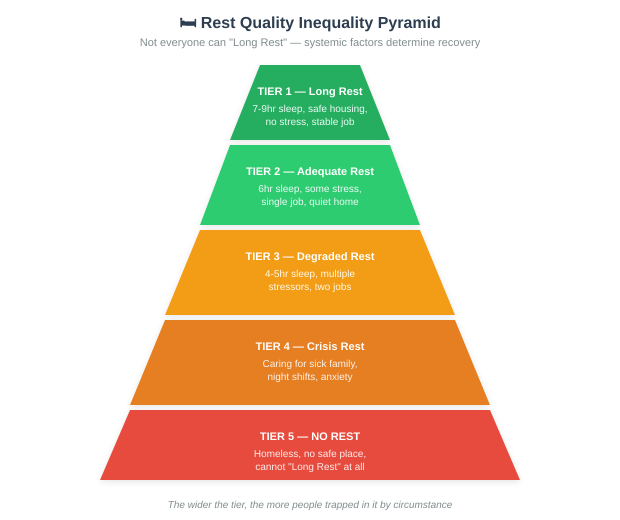
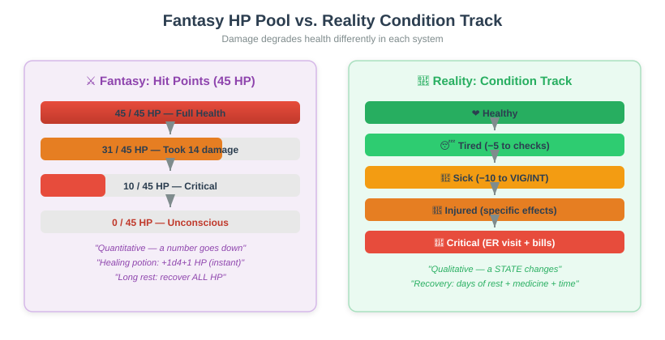
Every NPC in a Reality RPG campaign should have at least two dimensions. The "bad" boss has a sick child. The "perfect" partner hides an addiction. The "wise" mentor makes a crucial mistake. Real people are contradictory — your NPCs should be too.